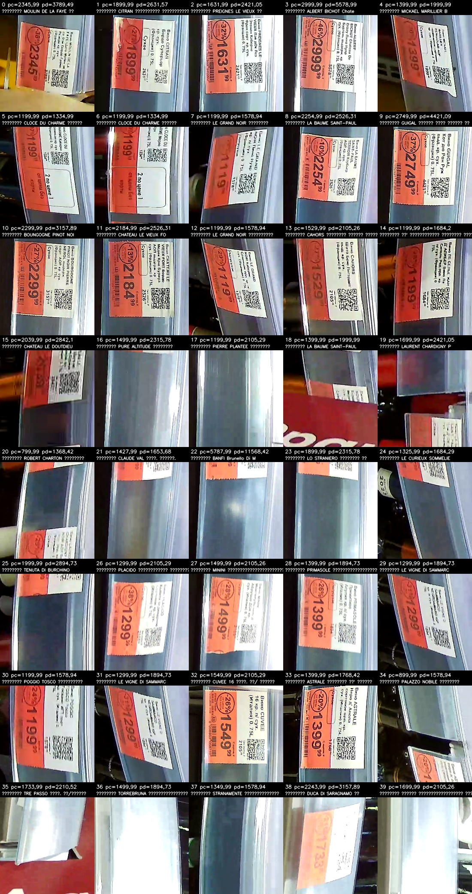
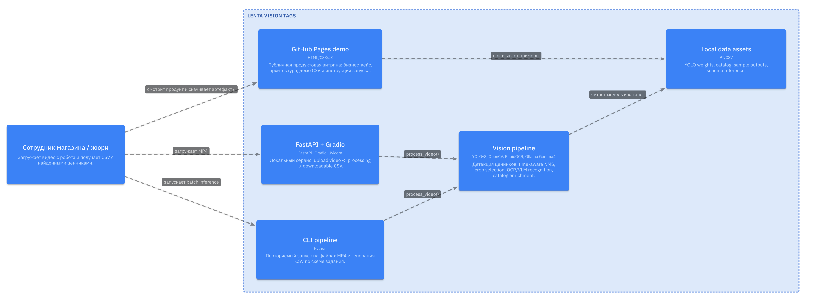
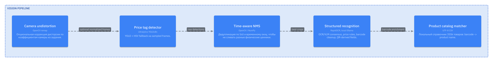

товарных наименований и barcode для локального матчинга.
Retail computer vision
Ценники из видео робота в готовый CSV для контроля полки
Локальный pipeline объединяет детекцию ценников, временную дедупликацию, OCR/VLM-распознавание, справочник товаров и проверку CSV-контракта.
честный aggregate на 5 размеченных видео без GT-copy.
без облачных API, с FastAPI/Gradio и CLI batch mode.
коэффициенты дисторсии вынесены в отдельный preprocessing-модуль.
Business value
Не просто OCR, а контур контроля ценников
Решение закрывает регулярный сценарий ритейла: робот проходит вдоль полки, система находит уникальные ценники, связывает их с товарным справочником и формирует CSV для сверки цен, промо и качества выкладки.
- Снижает ручной аудит ценников и риск расхождений на полке.
- Использует локальные модели, поэтому подходит для закрытого контура магазина.
- Разделяет честный recognition fallback и registration-режим для повторных проходов.

LikeC4
Архитектура решения

